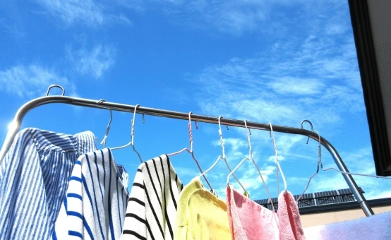
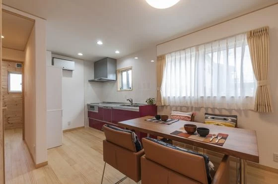
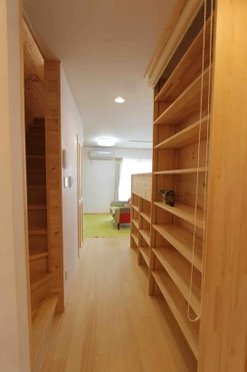

ランニングコストが安くなる家②
こんにちは。富山で自然素材にこだわるホンモノの家、フジ創アイノスです。 ✔スポット的にかかる費用 家を美しく保ち、かつ長持ちさせるためには、定期的にメンテナンスをしなければいけないのですが、 外部塗装をする場合、足場も含
続きを読む →FUJISOU AINOS JOURNAL
家づくりのこと、暮らしのこと。
日々の想いを、お伝えします。
家づくりについて 556件 ／ 新しい記事から 16・24ページ
こんにちは。富山で自然素材にこだわるホンモノの家、フジ創アイノスです。 ✔スポット的にかかる費用 家を美しく保ち、かつ長持ちさせるためには、定期的にメンテナンスをしなければいけないのですが、 外部塗装をする場合、足場も含
続きを読む →
こんにちは。富山で自然素材にこだわるホンモノの家、フジ創アイノスです。 家づくりの予算を考える時、最初にかかる土地費用や建築費用、庭の費用といったイニシャルコストばかりに目が行きがちですが、 同時に、今後ずっとかかり続け
続きを読む →こんにちは。富山で自然素材にこだわるホンモノの家、フジ創アイノスです。 家を建てられる方には子育て世代がとても多いです。 また、その中の多くの方はお子さんが生まれたばかりです。 となると設計する上で重要になってくることが
続きを読む →
こんにちは。富山で自然素材にこだわるホンモノの家、フジ創アイノスです。 今回はアイノスの家づくりについてお話します。 フジ創アイノスは「身体に悪影響を及ぼす建築材料を使わない自然素材の家」をコンセプトに、 高岡市を中心に
続きを読む →
こんにちは。富山で自然素材にこだわるホンモノの家、フジ創アイノスです。 11月14日（土）・15日（日）、21日（土）・22日（日）は完成見学会です。 お施主様こだわりの "かわいい"を沢山詰め込んだ 、ナチュラル＆キュ
続きを読む →
こんにちは。富山で自然素材にこだわるホンモノの家、フジ創アイノスです。 今月完成見学会を開催する、「ＳＩＭＰＬＥ ＮＯＴＥ」のおうちについてご紹介します。 「ＳＩＭＰＬＥ ＮＯＴＥ」 洗練されたデザイナーズ住宅 合理的な
続きを読む →
こんにちは。富山で自然素材にこだわるホンモノの家、フジ創アイノスです。 今回は、土地予算を抑えるために知っておくべきことをお伝えします。 ・土地の日当たりの良さにこだわらない 土地は、値段が高いものほど人気があるし、値段
続きを読む →
こんにちは。富山で自然素材にこだわるホンモノの家、フジ創アイノスです。 今後、日本はよりいっそう少子高齢化問題が深刻になっていきます。 具体的には、社会保険や税金といった給料の天引きが増えていき、 なのに逆に将来支給され
続きを読む →
こんにちは。富山で自然素材にこだわるホンモノの家、フジ創アイノスです。 先日新聞に、「30代・40代の平均貯蓄額約200万円」と載っていました。 夫婦そろって頑張って働いているものの、 なかなか思うようにお金が貯まってい
続きを読む →
こんにちは。富山で自然素材にこだわるホンモノの家、フジ創アイノスです。 家づくりに関して、 「まずは何からはじめたら良い？」 「どのくらいの価格で家を建てられるの？」 「土地探しはどうすればいい？」 などの疑問をお持ちで
続きを読む →
こんにちは。富山で自然素材にこだわるホンモノの家、フジ創アイノスです。 洗濯作業の手間を減らすためには、 まず干す動線を短くする必要があります。 この際注意しなければいけないポイントは、 わざわざ外に出て干さないといけな
続きを読む →こんにちは。富山で自然素材にこだわるホンモノの家、フジ創アイノスです。 本当の睡眠とは、「心も体も休める」ことです。 ぐっすり眠るために環境を整えましょう。 ベッドや枕などの寝具は、身体に合ったものを選ぶことが大切です。
続きを読む →
こんにちは。富山で自然素材にこだわるホンモノの家、フジ創アイノスです。 大きな家は、広々として気持ちがよく、スペースが多いので インテリアを楽しめる、といった魅力があります。 コンパクトな家にも、メリットはたくさんありま
続きを読む →
こんにちは。富山で自然素材にこだわるホンモノの家、フジ創アイノスです。 家づくりの際、多くの人が２階建の家を当たり前に考えがちでしたが、 近頃は平屋の家を選ぶ人が増えています。 平屋は2階建てよりも耐震性に優れているとい
続きを読む →こんにちは。富山で自然素材にこだわるホンモノの家、フジ創アイノスです。 今日は雨が降っていたのもあり、とても肌寒い日になりました。 この季節は朝晩が冷え込み、昼間との寒暖差が激しいですね。 季節の変わり目など寒暖差が大き
続きを読む →
こんにちは。富山で自然素材にこだわるホンモノの家、フジ創アイノスです。 通り抜け動線は収納を減らす最大の原因 続いて知っておいていただきたいことが、 通り抜け動線についてです。 収納を通過することが出来る動線や、 玄関を
続きを読む →こんにちは。富山で自然素材にこだわるホンモノの家、フジ創アイノスです。 "収納はたくさんあればあるほどいい" 家を建てる誰もがこのようにお考えになるでしょう。 しかし、無駄に収納を広げてしまうと、 必然的に家のコストは上
続きを読む →
こんにちは。富山で自然素材にこだわるホンモノの家、フジ創アイノスです。 ▼坪単価が安い家は、結局高い買い物となる 坪単価が安い家とは、言い換えるなら面積が大きい家です。 そして、家の面積が大きくなるということは、 結局家
続きを読む →こんにちは。富山で自然素材にこだわるホンモノの家、フジ創アイノスです。 リビングは広ければ広いほどいいから出来るだけ広く・・ 収納もたくさんあればあるほどいいから出来るだけ多く・・ 念のため和室もつくっておきたいし、 時
続きを読む →こんにちは。富山で自然素材にこだわるホンモノの家、フジ創アイノスです。 アイノスの家に訪れる人たちが、口をそろえて 「なんだか落ち着く」と言ってくれます。 自然素材の力でしょうか。 建材の知識など持っていなくても、 人は
続きを読む →
こんにちは。富山で自然素材にこだわるホンモノの家、フジ創アイノスです。 前回に続き、天井が高くても開放感がそれほどではない理由についてお話します。 ▼理由２：カーテンが常に閉まっているから この写真のように、いつもカーテ
続きを読む →こんにちは。富山で自然素材にこだわるホンモノの家、フジ創アイノスです。 リビングダイニングキッチンの開放感を高めるために、 "出来るだけ天井を高くしたい" という要望をお聞きすることがあります。 確かに、リビングダイニン
続きを読む →
こんにちは。富山で自然素材にこだわるホンモノの家、フジ創アイノスです。 アイノスの家は漆喰の壁が標準仕様です。 漆喰は古来から住まいに使われ続けてきた左官材です。 自然素材ですので健康面も安心。 調湿性に優れ、結露、カビ
続きを読む →こんにちは。富山で自然素材にこだわるホンモノの家、フジ創アイノスです。 「シックハウス症候群」とは、居住に由来する様々な健康障害の総称です。 ・目やのどが痛くなる ・鼻水やくしゃみが止まらない ・頭痛やめまい、吐き気がす
続きを読む →